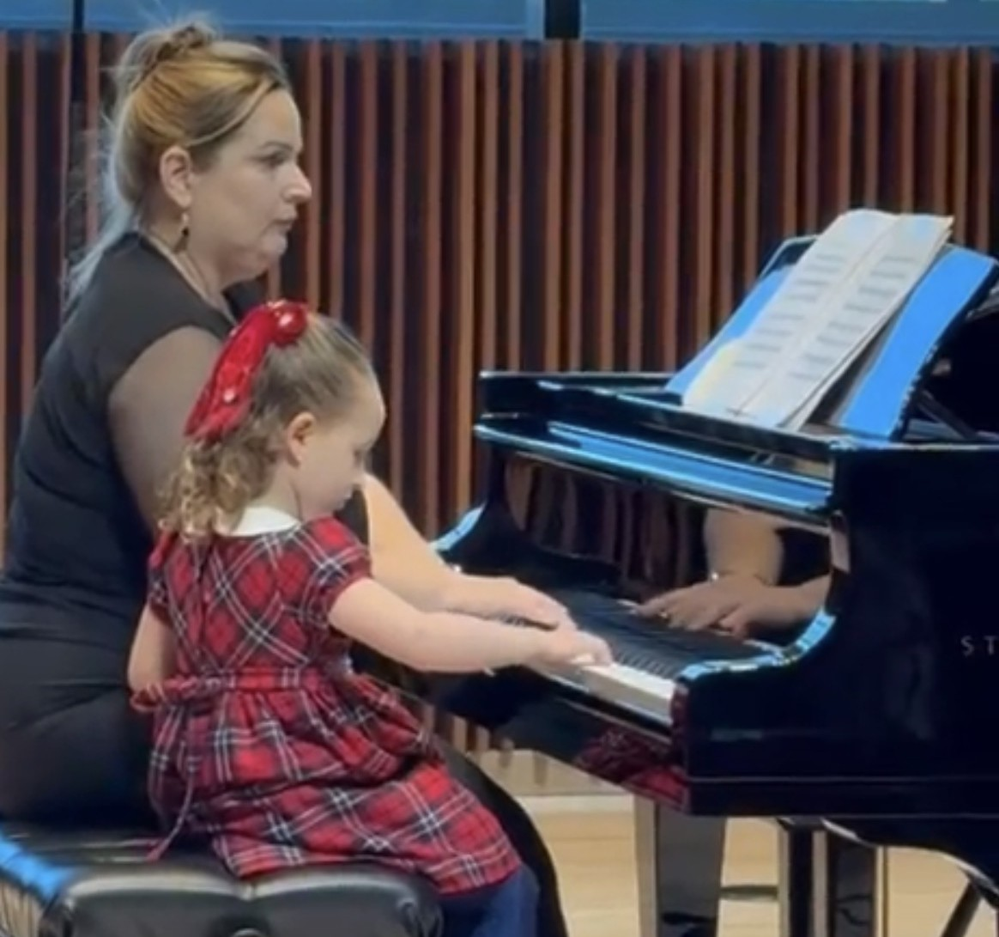
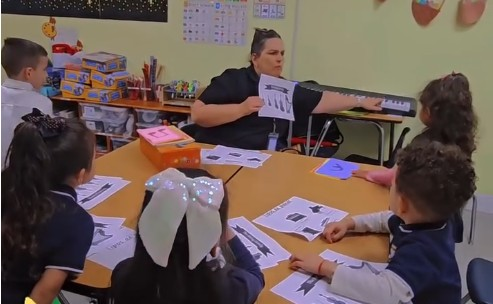

Educación musical integral basada en la paciencia, la empatía y el desarrollo del potencial único de cada niño.

Nuestras clases de piano son individuales y se adaptan meticulosamente al desarrollo de cada niño. Su objetivo principal es desarrollar la coordinación motriz fina, mejorar la lectura de partituras, fortalecer el ritmo y, sobre todo, fomentar un amor duradero por la música.
Las clases individuales son especialmente valiosas para niños con necesidades especiales. Les permiten mejorar su comunicación, expresar sus emociones, desarrollar la atención y la coordinación, otorgándoles un profundo sentido de pertenencia y logro al integrarse en un ambiente positivo y creativo.

En las clases de música llevadas a los daycares y las escuelas, realizamos una variedad de dinámicas atractivas: los niños exploran distintos instrumentos, cantan, hacen ritmos y aprenden a leer partituras de forma colaborativa.
Estas actividades grupales no solo les permiten conocer el mundo de la música, sino que son fundamentales para desarrollar la coordinación grupal, la memoria y el trabajo en equipo.
Nuestra metodología se basa profundamente en la paciencia, la dedicación y la empatía, porque sabemos que estamos guiando a los niños en su desarrollo integral. Valoramos enormemente la disciplina, la creatividad y la construcción de la confianza en sí mismos.
"Es un trabajo que deja huella en su crecimiento."